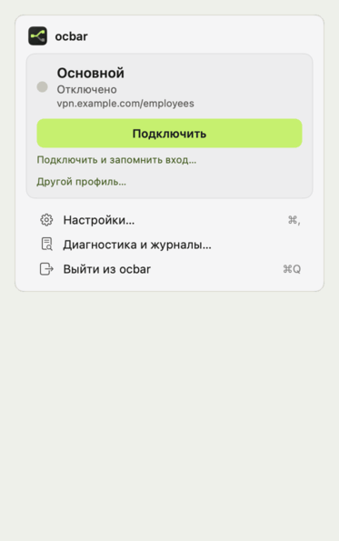

Рабочий VPN в строке меню Mac
Открытый клиент для AnyConnect-совместимых шлюзов на основе OpenConnect.

Пароль и код подставляются сами
Логин, пароль и одноразовый код из Связки ключей, KeePassXC или своей команды. Окно входа появляется, только когда без человека не обойтись.
Сети выбираешь ты, а не админ
В туннель идут только сети из твоего профиля. Остальное, включая домашнюю сеть, идёт обычным путём. Сети переключаются прямо в меню, без переподключения.
Умный DNS: свой и корпоративный сразу
Рабочие домены спрашивают корпоративный DNS, всё остальное — твой обычный. Системный DNS не подменяется.
Приложение, а не консоль
Нативное меню macOS: подключиться, поставить на паузу, переключить сети, посмотреть журналы. Мастер настройки и редактор профиля; командная строка — для автоматизации.
Переживает сон и смену сети
Супервизор сам восстанавливает соединение после сна, смены Wi-Fi и обрыва связи и не открывает окно входа без спроса.
Установка
brew tap ValeraGin/ocbar brew trust ValeraGin/ocbar brew install ocbar sudo ocbar install ocbar app start
Homebrew собирает ocbar на твоём Mac. Команда с sudo ставит сетевого помощника, дальше мастер настройки добавит шлюз.
macOS 13+ · Command Line Tools · свой AnyConnect-совместимый шлюз